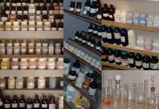

Ma dov'è andata a finire la chimica sperimentale di questo blog?
Più niente da fare? Basta provette da sporcare?
Spero di no, spero proprio di no!
Dopo la soddisfazione (piccola, ma pur sempre soddisfazione) dei 150 KiloClick raggiunti, devo mettermi d'impegno per far recitare qualcosina agli attori del mio vecchio teatrino chimico.
Ogni volta che passo, frettolosamente, li vedo lì che scalpitano prigionieri nelle loro bottigliette, le quali pian piano si stanno ricoprendo di quel velo biancastro fastidioso dovuto ai microscopici effluvi che si condensano lentamente sui vetri inusati dei laboratori.
(Sempre che il mio si possa eufemisticamente considerare un "laboratorio"... ma per me lo è).

A mia discolpa c'è stato nell'ultimo anno il poco tempo a disposizione da dedicare agli hobbies, spero che la situazione migliori con la prossima bella stagione.
Si dice: -faccio questo, -faccio quello... poi il tempo per farlo concretamente si trova con difficoltà.
Troppi mille impegni, ma forse è meglio così.
Comunque ogni tanto aggiungo un brano alla listarella già pronta da far recitare con calma alla mia compagnia; spero di iniziare a onorarla, questa listarella, quanto prima.
Purtroppo le belle sintesi di chimica organica sono finite da tempo per consunzione naturale, basta leggere i forum anche stranieri per constatarlo: poca roba, quasi niente di nuovo sotto il sole.
Anche se le sintesi di per sè sono oggettivamente infinite, NON lo sono quelle fattibili con le risorse limitate e la fatica di reperire i reagenti come è inevitabile in un qualsiasi home-lab.
In qualche caso si può avere d'ufficio (e gratis!) la bellissima sostanza esotica, ma allora non siamo in un home-lab. Troppo facile!
Fra una decina di giorni inizia l'estate: sole e caldo, fate vedere chi siete!